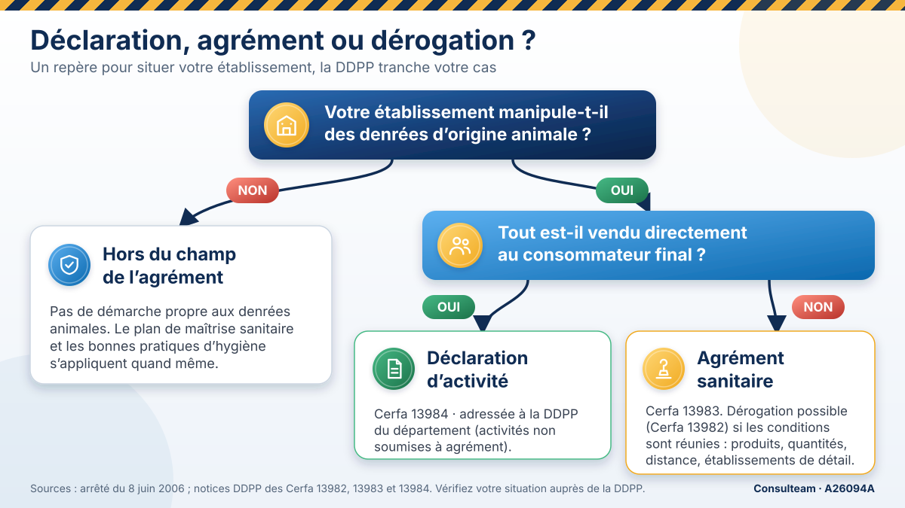
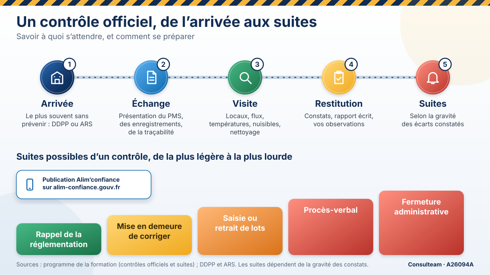
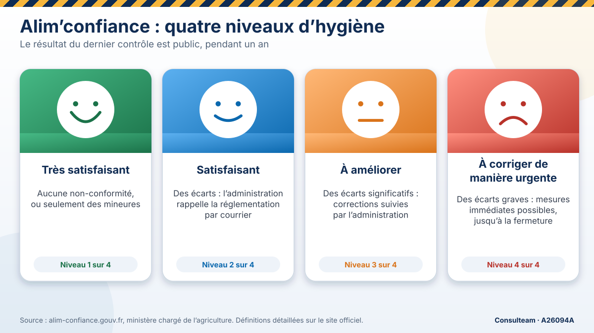

Les textes à connaître
Règlements (CE) n° 178/2002 (principes, traçabilité), 852/2004 (hygiène des denrées), 853/2004 (denrées d’origine animale) et 2073/2005 (critères microbiologiques).
Arrêté du 8 juin 2006 (agrément et dérogation) ; arrêté du 21 décembre 2009 (températures, refroidissement rapide, remise directe au consommateur) ; arrêté du 28 juin 1994 (identification et agrément sanitaire ; article 1er : déclaration d’activité).
Article L. 201-7 : information immédiate de l’autorité administrative lorsqu’un résultat d’autocontrôle indique qu’un produit peut présenter un danger pour la santé.
Articles R. 412-12 à R. 412-14, cités au programme de la formation : consulter le texte en vigueur sur Légifrance.
Déclaration, agrément ou dérogation

- Cerfa 13984Déclaration d’activitéÉtablissements qui manipulent des denrées d’origine animale sans agrément.
- Cerfa 13983Demande d’agrémentQuand les denrées ne sont pas destinées exclusivement à la remise directe au consommateur.
- Cerfa 13982Dérogation à l’agrémentPour approvisionner des commerces de détail, à conditions réunies (produits, quantités, distance).
L’exploitant informe : article L. 201-7
Lorsqu’un résultat d’autocontrôle conduit à penser qu’une denrée produite, transformée ou distribuée peut présenter un danger pour la santé, l’exploitant informe immédiatement l’autorité administrative. L’obligation vise aussi un résultat défavorable sur l’environnement de production. Elle s’applique que le produit soit encore chez vous ou déjà livré. Le plan de retrait-rappel et la traçabilité (séance 4) permettent d’agir vite.
Le contrôle officiel

Les contrôles sont menés par la direction départementale en charge de la protection des populations (DDPP) ou l’agence régionale de santé (ARS), et par des organismes délégataires accrédités pour certains établissements de remise directe. L’inspecteur s’appuie sur une grille de contrôle : documents (PMS, enregistrements, traçabilité, formations), locaux, pratiques, températures, nettoyage, nuisibles.
Alim’confiance

L’exploitant est informé avant la publication et peut présenter ses observations (le dispositif indique un délai de quinze jours). Pour « À améliorer » et « À corriger de manière urgente », un nouveau contrôle officiel vérifie la mise en œuvre des corrections. Le niveau reste affiché un an sur alim-confiance.gouv.fr.
Ce qu’une hygiène insuffisante fait risquer
- AdministratifSaisie, mise en demeureRetrait de lots, injonction de corriger.
- SanctionsProcès-verbal, amendes, fermetureSelon la gravité et les suites données.
- ImageMédiatisation, perte de clientèleRésultat public, avis en ligne, confiance des clients.
Se préparer en dix minutes
- Rassembler le PMS à jour : BPH, analyse des dangers, plan de nettoyage.
- Tenir à portée les enregistrements : températures, réception, nettoyage, formations.
- Savoir retrouver un lot : de la matière première au client (S15).
- Connaître vos allergènes et l’affichage associé.
- Désigner qui accueille l’inspecteur et qui répond aux questions.